MENU
| Home | Other Services |
|---|
QUICK JUMP LINKS:
| LUNCH | DESSERT | BEVERAGES |
|---|
Chicken Curry: chicken breast that is cooked in a spicy masala starch based gravy. comes with potatoes, celery, and bay leaves.
Pelau (Cook-Up Rice): rice that is simmered together with different types of beans, carrots, and spinach.
Jerk Chicken: chicken that is seasoned with a multitude of spices, especialy hot chilli or cayenne pepper. jerk chicken is a baked dish
usually carrying a high spice level.
Roti: pan fried bread that is clapped for a flaky texture.
Dhal Puri: dhal (dried split pea) based savory layered bread, similar to roti. usually eaten with chicken curry or other dishes.
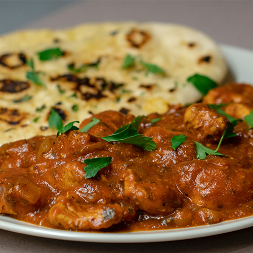
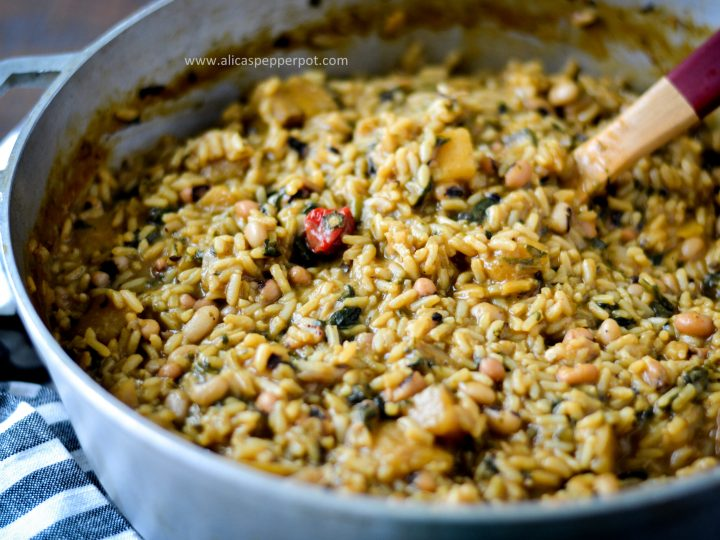
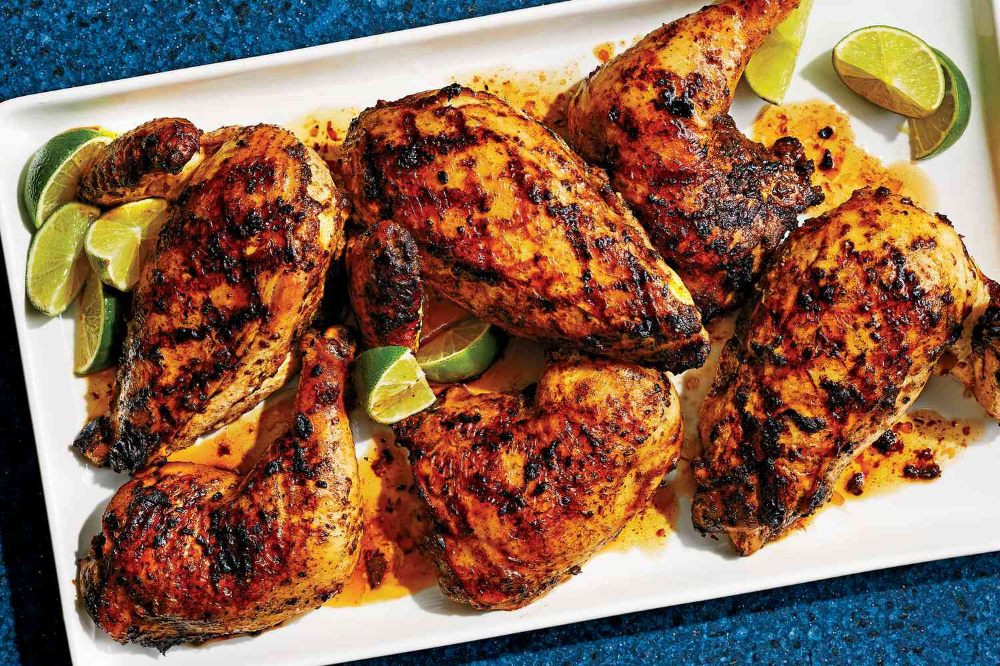
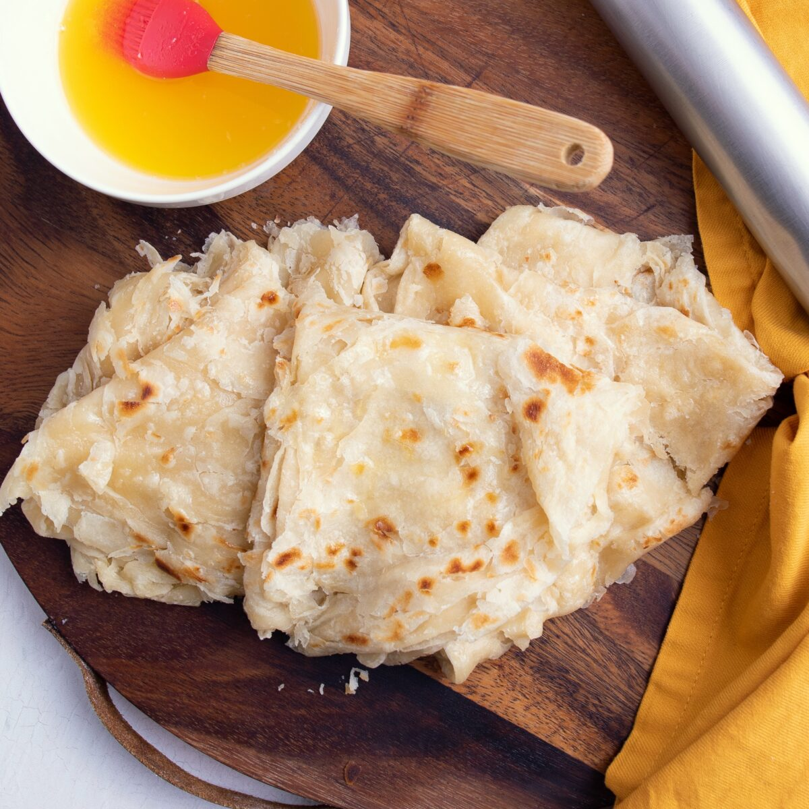
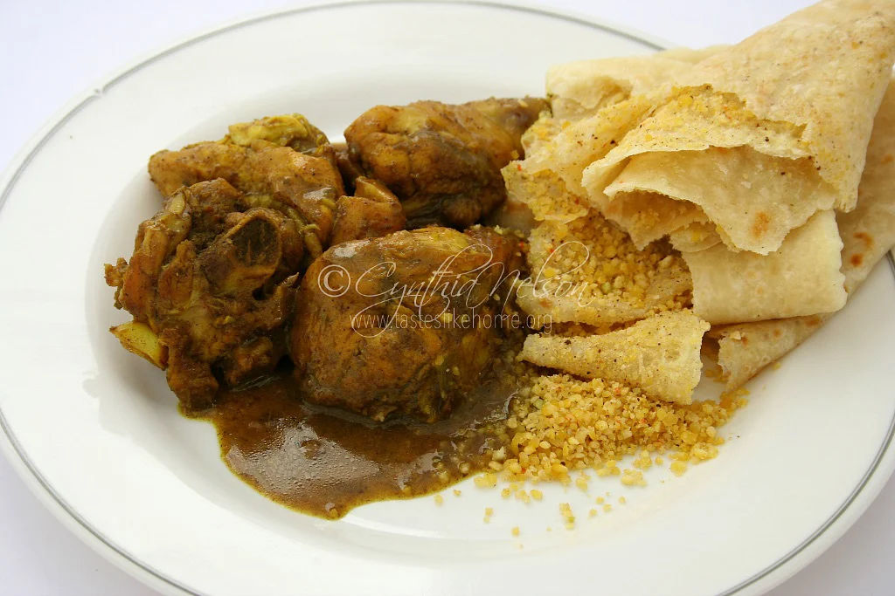
Ice Block: frozen custard made of different types of milk and custard powder. is sweet and perfect for a summer day.
Cassava Pone: grated cassava & shredded coconut that is combined with butter and milk to create a sticky batter that is baked and served.
Mithai fried spiced soft dough that is glazed with a sugar coating
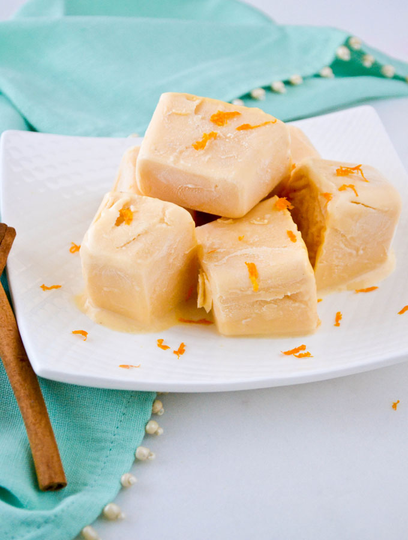
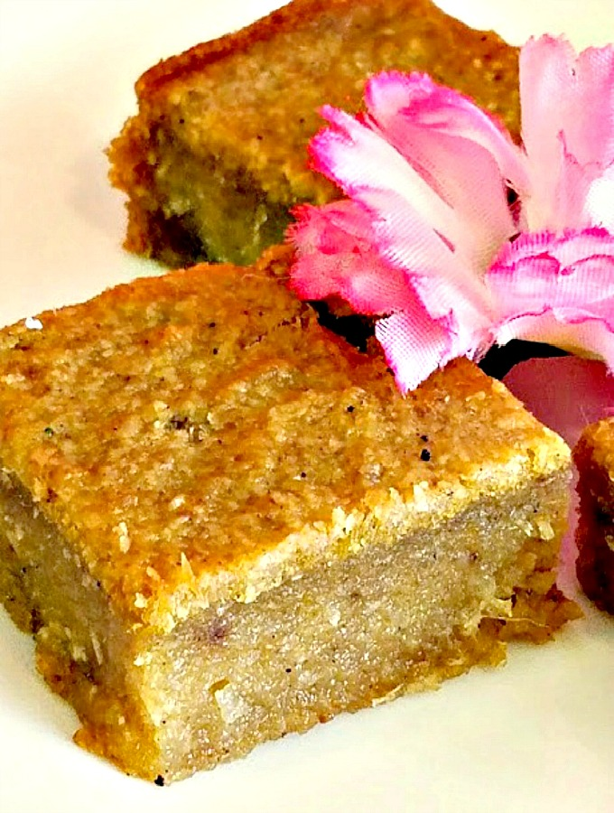
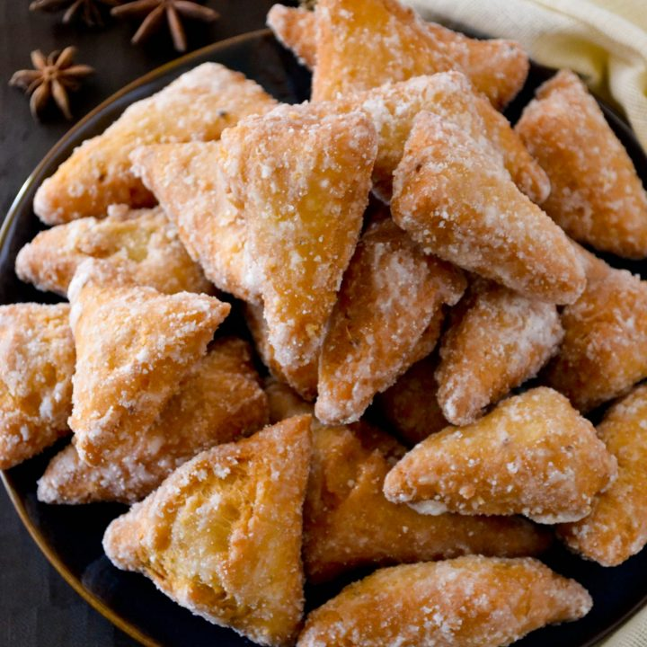
Peanut Punch: rich and creamy beverage made with peanut butter, milk, and oats. great energy drink!
Cream Soda: sweet soda that resembles the flavor of an ice cream float.
Mauby: a beverage made by boiling mauby bark and orange peels. it is spiced like a tea but carries a bitter after taste.
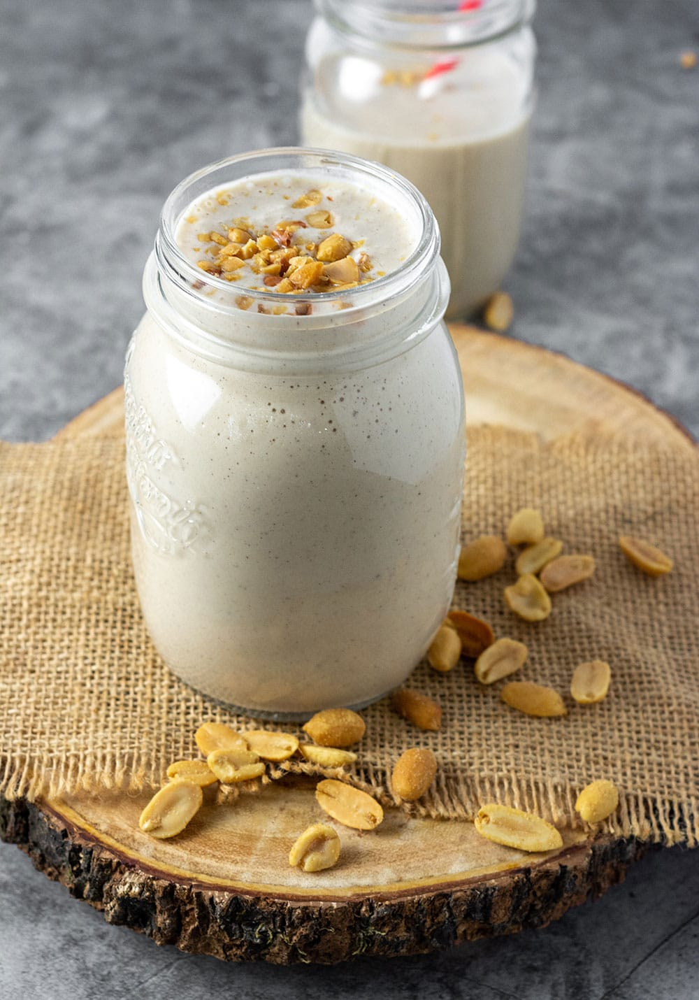
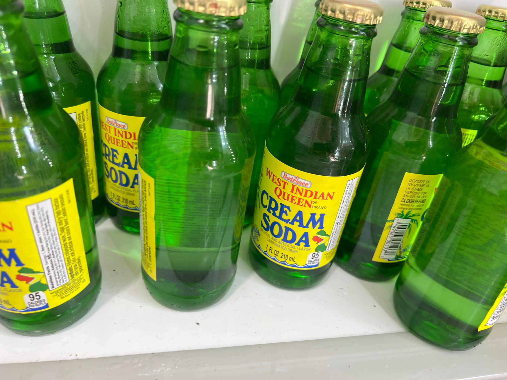
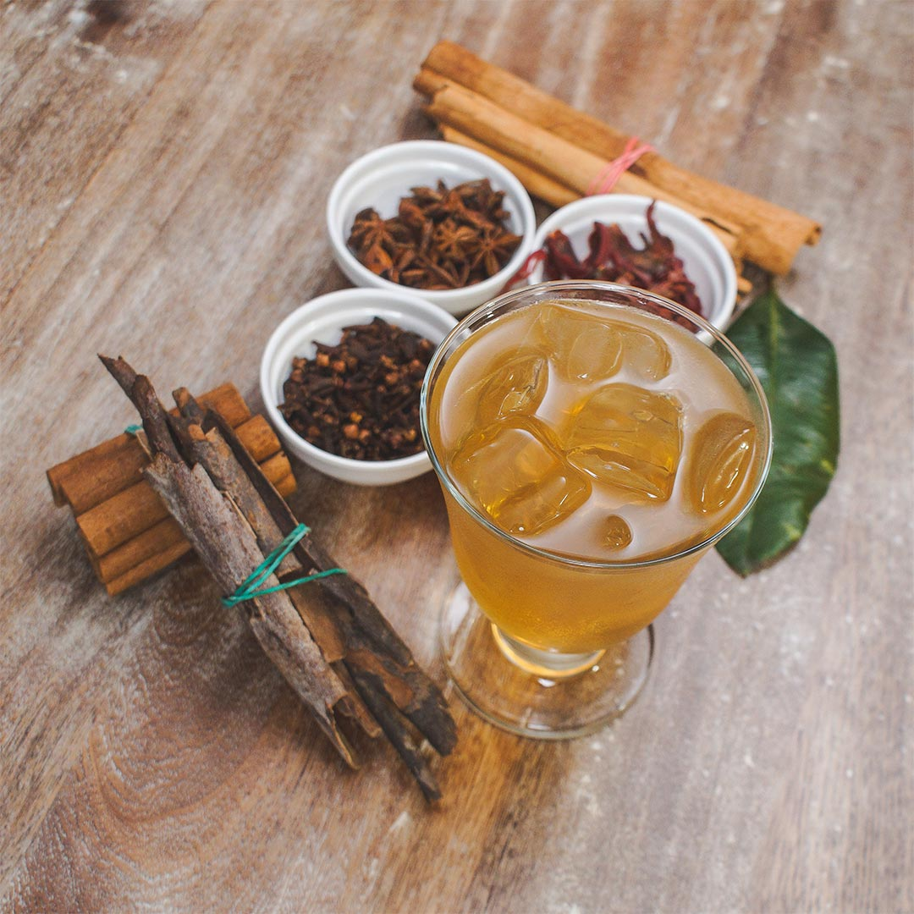
| Home | Other Services |
|---|
Open Mon-Sat 9am-5pm -- Any Questions? Contact Here!